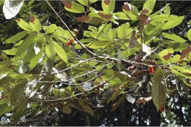
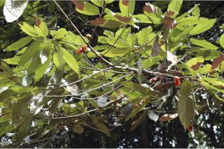

Trees up to 20 m tall.
20 ಮೀ. ವರೆಗಿನ ಎತ್ತರದ ಮರಗಳು.
Trees up to 20 m tall.
மரங்கள் 20 மீ. உயரம் வரை வளரக்கூடியது.
Bark brownish, usually smooth, irregulary flaky; blaze reddish.
ತೊಗಟೆ ದಟ್ಟ ಕಂದು ಬಣ್ಣದಲ್ಲಿರುತ್ತದೆ ಸಾಮಾನ್ಯವಾಗಿ ನಯವಾಗಿದ್ದು ಅನಿಯತವಾಗಿ ಚಕ್ಕೆಯೇಳುತ್ತದೆ;ಕಚ್ಚು ಮಾಡಿದ ಜಾಗ ಕೆಂಪು ಛಾಯೆಯನ್ನು ಹೊಂದಿರುತ್ತದೆ.
Bark brownish, usually smooth, irregulary flaky; blaze reddish.
மரத்தின் பட்டை ப்ரவுன் நிறமானது, பொரும்பாலும் வழவழப்பானது, ஒழுங்கற்ற செதில்களாக உதிருபவை; உள்பட்டை சிவப்பு நிறமானது.
Branches verticillate and horizontal; young branchlets terete, rusty tomentose.
ಕವಲುಗಳುಗಳು ಸುತ್ತು ಜೋಡನೆಯಲ್ಲಿದ್ದು ಮುಖ್ಯ ಕಾಂಡದ ಲಂಬ ರೇಖೆಗೆ ಸಮಕೋನದಲ್ಲಿರುತ್ತವೆ; ಎಳೆಯ ಕಿರುಕೊಂಬೆಗಳು ದುಂಡಾಗಿದ್ದು ತುಕ್ಕು ವರ್ಣದ ದಟ್ಟವಾದ ಮೃದು ತುಪ್ಪಳದಿಂದ ಕೂಡಿರುತ್ತವೆ.
Branches verticillate and horizontal; young branchlets terete, rusty tomentose.
கிளைகள் வர்டிசில்லேட் மற்றும் நிலத்திற்கு கிடைமட்டமானது; சிறியநுனிக்கிளைகள் குறுக்குவெட்டுத் தோற்றத்தில் வளையமானது, துருப்போன்ற உரோமங்களுடையது.
Sap red from cut end of bark, profuse.
ತೊಗಟೆಯನ್ನು ಕೆತ್ತಿದಾಗ ಕೆಂಪು ಬಣ್ಣದ ವಿಫುಲವಾದ ಸಸ್ಯ ರಸವಿರುತ್ತದೆ.
Sap red from cut end of bark, profuse.
மரத்தின் பட்டை வெட்டப்படும் போது சிவப்பு நிற பால் அதிகளவு சுரக்கிறது.
Leaves simple, alternate, distichous; petiole 0.6-1.3 cm, stout, canaliculate, fulvous stellate tomentose when young and glabrous when mature; lamina 12-23 x 3.5-8 cm, narrow oblong to oblong or narrow elliptic to lanceolate, apex gradually acute to acuminate, base rounded or acute, margin entire, chartaceous to subcoriaceous, shining above, glaucous beneath, fulvous stellate tomentose when young; midrib raised above; secondary_nerves prominent, 13-21 pairs, gradually curved, prominently raised beneath and slightly raised above; tertiary_nerves closely obliquely percurrent.
ಎಲೆಗಳು ಸರಳವಾಗಿದ್ದು ಪರ್ಯಾಯ ಮತ್ತು ಸುತ್ತು ಜೋಡನಾ ವ್ಯವಸ್ಥೆಯಲ್ಲಿದ್ದು ಕಾಂಡದ ಎರಡೂ ಕಡೆ ಎದುರು ಬದರಿನ ಲಂಬ ಸಾಲಿನಲ್ಲಿರುತ್ತವೆ; ತೊಟ್ಟುಗಳು 0.6 ರಿಂದ1.3 ಸೆಂ.ಮೀ. ಉದ್ದ ಹೊಂದಿದ್ದು ಕಾಲುವೆಗೆರೆ ಸಮೇತವಾಗಿರುತ್ತವೆ ಮತ್ತು ಎಳೆಯದಾಗಿದ್ದಾಗ ನಸುಗೆಂಪು ಮಿಶ್ರಿತ ಹಳದಿ ಬಣ್ಣದ ನಕ್ಷತ್ರ ರೂಪದ ದಟ್ಟವಾದ ಮತ್ತು ಉಪ-ಮೃದುತುಪ್ಪಳದಿಂದ ಕೂಡಿರುತ್ತವೆ ಹಾಗೂ ಬಲಿತಾಗ ರೋಮರಹಿತವಾಗಿರುತ್ತವೆ;ಪತ್ರಗಳು 12 - 23 X 3.5 - 8 ಸೆಂ.ಮೀ.ವರೆಗಿನ ಗಾತ್ರವಿದ್ದು ಸಂಕುಚಿತ ಚತುರಸ್ರದಿಂದ ಚತುರಸ್ರ ಅಥವಾ ಸಂಕುಚಿತ ಅಂಡವೃತ್ತದಿಂದ ಭರ್ಜಿಯವರೆಗಿನ ಆಕಾರ ಹೊಂದಿದ್ದು, ಅನುಕ್ರಮವಾಗಿ ಚೂಪಾದುದರಿಂದ ಕ್ರಮೇಣ ಚೂಪಾಗುವ ತುದಿ,ದುಂಡಾದ ಅಥವಾ ಚೂಪಾದ ಬುಡ,ನಯವಾದ ಅಂಚು,ಕಾಗದವನ್ನೋಲುವುದರಿಂದ ಹಿಡಿದು ಉಪ- ತೊಗಲನ್ನೋಲುವ ಮಾದರಿಯ ಮೇಲ್ಮೈ ಹೊಂದಿರುತ್ತವೆ,ಪತ್ರಗಳು ಮೇಲ್ಭಾಗದಲ್ಲಿ ಹೊಳಪಿನಿಂದ ಕೂಡಿದ್ದು ತಳಭಾಗ ಮಾಸಲು ಬೂದು ಹಸಿರು ಬಣ್ಣದಲ್ಲಿರುತ್ತವೆ ;ಮಧ್ಯ ನಾಳ ಮೇಲ್ಭಾಗದಲ್ಲಿ ಮೇಲೆದ್ದಿರುತ್ತದೆ; ಎರಡನೇ ದರ್ಜೆಯ ನಾಳಗಳು 7 - 14 ಜೋಡಿಗಳಿದ್ದು ಪ್ರಮುಖವಾಗಿರುತ್ತವೆ ಮತ್ತು ಕ್ರಮೇಣವಾಗಿ ಬಾಗಿರುತ್ತವೆ ಹಾಗೂ ಪತ್ರದ ತಳಭಾಗದಲ್ಲಿ ಪ್ರಮುಖವಾಗಿ ಉಬ್ಬಿದ್ದು ಮೇಲ್ಭಾಗದಲ್ಲಿ ಸ್ವಲ್ಪಮಟ್ಟಿಗೆ ಉಬ್ಬಿರುತ್ತವೆ;ಮೂರನೇ ದರ್ಜೆಯ ನಾಳಗಳು ಕಡಿಮೆ ಅಂತರದಲ್ಲಿದ್ದು ಓರೆಯಾಗಿ ಎಲೆದಿಂಡಿನ ಕಡೆಗೆ ಬಾಗಿರುತ್ತವೆ.
Leaves simple, alternate, distichous; petiole 0.6-1.3 cm, stout, canaliculate, fulvous stellate tomentose when young and glabrous when mature; lamina 12-23 x 3.5-8 cm, narrow oblong to oblong or narrow elliptic to lanceolate, apex gradually acute to acuminate, base rounded or acute, margin entire, chartaceous to subcoriaceous, shining above, glaucous beneath, fulvous stellate tomentose when young; midrib raised above; secondary_nerves prominent, 13-21 pairs, gradually curved, prominently raised beneath and slightly raised above; tertiary_nerves closely obliquely percurrent.
இலைகள் தனித்தவை, மாற்றுஅடுக்கமானவை, இருநெடுக்கு வரிசையிலையடுக்கம் (டைஸ்டிக்கஸ்); இலைக்காம்பு 0.6-1.3 செ.மீ., தடித்தவை, குறுக்குவெட்டுத் தோற்றத்தில் கேனாலிகுலேட், இளம்பருவத்தில் நட்சத்திர வடிவ உரோமங்களுடையது மற்றும் முதிரும் போது உரோமங்களற்றது; இலை அலகு 12-23 X 3.5-8 செ.மீ., குறுகிய நீள்சதுர வடிவானது முதல் நீள்சதுர வடிவானது அல்லது குறுகிய நீள்வட்ட வடிவானது முதல் ஈட்டி வடிவானது, அலகின் நுனி சீராக கூரியது முதல் அதிக்கூரியது, அலகின் தளம் வட்டமானது அல்லது கூரியது, அலகின் விளிம்பு முழுமையானது, சார்ட்டேசியஸ் முதல் சப்கோரியேசியஸ், அலகின் மேற்பரப்பு பளபளப்பானது, அலகின் கீழ்பரப்பு மெழுகுபூசியது (க்களாக்கஸ்) போன்றது, இளம்பருவத்தில் நட்சத்திர வடிவ உரோமங்களுடையது; மையநரம்பு மேற்புறத்தில் அலகின் பரப்பைவிட உயர்ந்து இருக்கும்; இரண்டாம் நிலை நரம்புகள் தெளிவானது, 13-21 ஜோடிகள், சீராக வளைந்தது, தெளிவானது; மூன்றாம் நிலை நரம்புகள் நெருக்கமான சாய்ந்தவாறு பெர்க்கரண்ட்.
Flowers unisexual, dioecious; male flowers on short axillary peduncle, fulvous stellate tomentose; female flowers 1-3, pedicel up to 0.8 cm long.
ಹೂಗಳು ಏಕ ಲಿಂಗಿಗಳಾಗಿದ್ದು ಗಂಡು ಮತ್ತು ಹೆಣ್ಣು ಹೂಗಳು ಪ್ರತ್ಯೇಕ ಸಸ್ಯಗಳಲ್ಲಿರುತ್ತವೆ;ಗಂಡು ಹೂಗಳು ಹಳದಿ ಛಾಯೆಯನ್ನು ಹೊಂದಿದ್ದು ಅಕ್ಷಾಕಂಕುಳಿನಲ್ಲಿರುವ ಪುನರಾವೃತ್ತಿಯಾಗಿ ಕವಲೊಡೆದ ಪುಷ್ಪಮಂಜರಿಯಲ್ಲಿರುತ್ತವೆ ಹಾಗೂ ನಸುಗೆಂಪು ಮಿಶ್ರಿತ ಹಳದಿ ಬಣ್ಣದ ದಟ್ಟ ಮೃದುಗೂದಲಿಂದ ಕೂಡಿರುತ್ತವೆ;ಹೆಣ್ಣ ಹೂಗಳು ದೊಡ್ಡ ಗಾತ್ರದಲ್ಲಿದ್ದು ಅಕ್ಷಾಕಂಕುಳಿನಲ್ಲಿನ ಮಧ್ಯಾಭಿಸರ ಪುಷ್ಪಮಂಜರಿಯಲ್ಲಿರುತ್ತವೆ.
Flowers unisexual, dioecious; male flowers on short axillary peduncle, fulvous stellate tomentose; female flowers 1-3, pedicel up to 0.8 cm long.
மலர்கள் ஓர் பாலானவை, ஈரகம் கொண்டவை; ஆண் மஞ்சரி குட்டையான காம்புடையது, இலைக்கோணங்களில் காணப்படுபவை, நட்சத்திர வடிவ உரோமங்களுடையது; பெண் மலர்கள் 1-3, மலர்காம்பு 0.8 செ.மீ. நீளமானது.
Capsule, elliptic, to 4 cm long, 2-valved, apiculate, fulvous tomentose; seed one with crimson red lacinated aril.
ಸಂಪುಟ ಫಲ ಅಂಡವೃತ್ತಾಕೃತಿಯಲ್ಲಿದ್ದು 4 ಸೆಂ.ಮೀವರೆಗಿನ ಗಾತ್ರ ಹೊಂದಿದ್ದು, 2 ಹಾಲೆಗಳ ಸಮೇತವಿರುತ್ತವೆ ಮತ್ತು ತುದಿಯಲ್ಲಿ ಸೂಕ್ಷ್ಮವಾದ ಮುಳ್ಳನ್ನು ಹೊಂದಿದ್ದು ನಸುಗೆಂಪು ಮಿಶ್ರಿತ ಹಳದಿ ಬಣ್ಣದ ದಟ್ಟ ಮೃದುಗೂದಲಿಂದ ಕೂಡಿರುತ್ತವೆ; ಬೀಜಗಳು ಒಂದಿದ್ದು ಕಡುಗೆಂಪು ಬಣ್ಣದ ಆಳವಾದ ಸೀಳಿಕೆಗಳನ್ನುಳ್ಳ ಪತ್ರೆ ಸಮೇ
Capsule, elliptic, to 4 cm long, 2-valved, apiculate, fulvous tomentose; seed one with crimson red lacinated aril.
வெடிகனி (கேப்சியூல்), நீள்வட்ட வடிவானது, 4 செ.மீ. நீளமானது, 2-அறைகளுடையது, நுனி நீட்சியுடையது, உரோமங்களுடையது; ஒரு விதையுள்ள கனி, விளிம்களில் பிளவுடைய கிரிம்சன்-சிவப்பு நிறமான பத்ரி (ஏரில்) உடையது.

 
